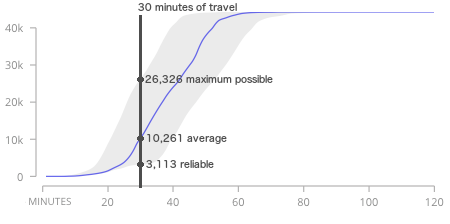
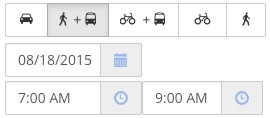

Transport Analyst
Project
Champagne-Ardenne
Marseille
New project...
Batch Results
None (interactive single-point)
Current network regional access grid
2020 network regional access grid
Launch new batch...
Transport Scenario
None
Baseline
Add route E4
Lower route 8 frequency
Baseline
Remove routes 5 and 7
Double route 3 frequency
Add transport data...
Destinations
None
Total Population
Children
Adults
Total jobs
Population 2010
Population 2011
Population 2012
Add destinations...
 